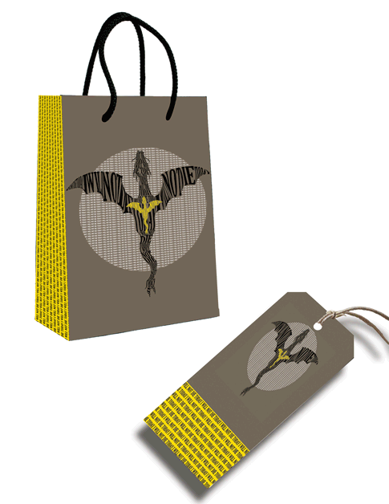
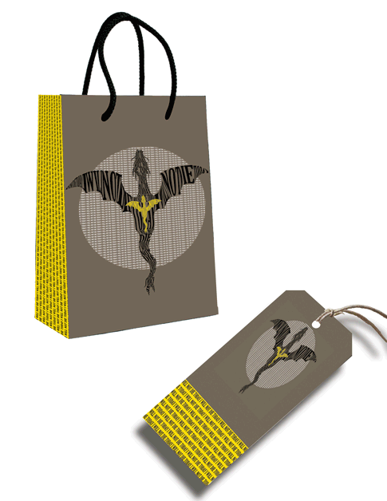

Marina is a graphic designer , with a background in interior design. She is passionate about creating visually compelling designs that communicate meaningful messages. She specializes in logo, branding, illustration, and layout composition. Marina crafts designs that are both functional and aesthetically pleasing.
Proficient in Adobe Photoshop, Illustrator, and InDesign, Marina is always eager to expand her skills and stay ahead in the ever-evolving field of graphic design. Whether working on branding, print materials, or digital design, she focuses on delivering impactful results that align with the brand and its goals.
Outside of design, Marina enjoys spending time outdoors, biking, swimming, reading, and continuing her personal growth. She is currently seeking to gain experience that will allow her to utilize and expand her skill set. She is excited to collaborate on projects that push creative boundaries while helping others visually tell their stories.


 
